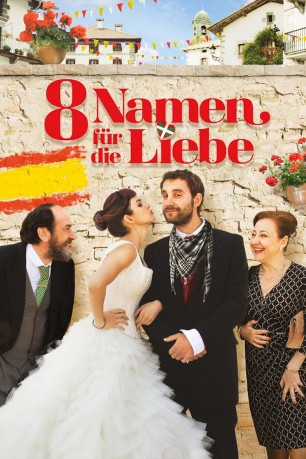

#2316 8 Namen für die Liebe
 gesehen am 30.10.2015
gesehen am 30.10.2015
 
 IMDB-Wertung: 6.6 / 10
IMDB-Wertung: 6.6 / 10  Metascore: 0
Metascore: 0 
Rafa (Dani Rovira) liebt seine Heimat Sevilla und denkt zunächst gar nicht daran, Andalusien zu verlassen. Das Leben hier ist schön, es gibt tolle Frauen und heißen Flamenco, warum also gehen? Die Einstellung des Andalusiers verändert sich, als er die Baskin Amaia (Clara Lago) kennenlernt. Sie ist immun gegen Rafas erprobten Charme, was er nicht akzeptiert und daher mobil wird. Für den Mann aus dem Süden geht es gen Norden an die spanisch-französische Grenze, ins Baskenland, Amaia hinterher. Auf einmal ist Rafa in einer fremden Welt, mit einer anderen Sprache, anderen Bräuchen, anderer Mentalität – und muss diese ihm nicht vertraute Kultur adaptieren. Amaias Vater Koldo (Karra Elejalde) ist zu Besuch da und erwartet, ihren Bräutigam kennenzulernen, der sie allerdings hat sitzen lassen – Rafa springt ein, gibt sich als Verlobter aus. Die Anpassung wird zum Abenteuer. Aber muss Rafa wirklich jemand anderes werden, um Amaias Herz zu erobern?
Jahr: 2014
Dauer: 98 Minuten
FSK: 6
Land: Spanien Studio: Alamode FilmverleihTonspuren:
Untertitel:
Auflösung: 1080p (1920x1040) Größe: 4577 MB
Genre: Komödie
Regisseur: Emilio Martínez Lázaro
Drehbuch: Borja Cobeaga, Diego San José
Soundtrack: Fernando Velázquez
Darsteller:
 Clara Lago als Amaia
Clara Lago als Amaia- Dani Rovira als Rafa
 Carmen Machi als Merche
Carmen Machi als Merche Karra Elejalde als Koldo
Karra Elejalde als Koldo- Alfonso Sánchez als Curro
- Itziar Atienza als Vendedora
- Alberto López als Joaquín
- Aitor Mazo als Padre Inaxio
- Abel Mora als Pedro
- Aitziber Garmendia als Iratxe
- Miriam Cabeza als Edurne
- Iñaki Beraetxe als Ertzaintza 1
- Egoitz Lasa als Ertzaintza 2
- Lander Otaola als Borroka 1
- Mikel Roman als Borroka 2
- Santi Ugalde als Conductor Kepa
- Telmo Esnal als Camarero Asador
- Antonio Romero als Himself
- Rafael Ruiz als Himself
Datei: X:\2014(A-F)\8 Namen für die Liebe (2014, FSK, 1920x1040).mkv seit 29.10.2015
Festplatte: HD 2013(I-Z)-2014(A-Z)
 Es gibt insgesamt 119 Filme in der Gruppe '2014(A-F)'
Es gibt insgesamt 119 Filme in der Gruppe '2014(A-F)'